صفحه ۲۸۷
توضیحات کدها:
خط 1: تابع path وارد (import) شده است.
خط 2: تابع show_temp_view از views.py وارد (import) شده است.
خط 5: یک path اضافه شده است. این path به این معنی است که اگر کاربر صفحه اصلی سایت را باز کرد، show_temp_view از درون فایل views.py اجرا شود. به این path پارامتر name اضافه شده است.
در جنگو هر آدرس (URL) میتواند یک نام داشته باشد تا در هر جایی دیگر، راحتتر به آن ارجاع داده شود.
این اسم هیچ تأثیری روی خود آدرس URL ندارد و فقط برای ارجاعدادن استفاده میشود.
پارامتر name در مسیرهای جنگو مانند یک اسم مستعار برای آن آدرس است که به آن URL name هم میگویند.
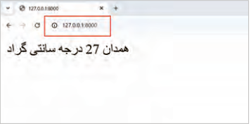
فایل را ذخیره نمایید و با runserver سرور جنگو را راهاندازی کنید.
صفحه اصلی سایت را در مرورگر باز کنید.
تبریک، شما اولین view جنگو خود را با موفقیت ایجاد کردید (شکل 16).
شکل 16 خروجی اولین view جنگو
فعالیت
با تکمیل view و فایل urls.py اطلاعات دمای تهران را نمایش دهید.
آشنایی با تابع render در جنگو برای نمایش بهتر view از فایلهای html استفاده میشود. هر app در جنگو، میتواند فایلهای html مخصوص به خود را بهصورت جداگانه داشته باشد، برای انجام این کار یکپوشه به اسم templates در app ایجاد کنید و فایلهای html را در آن ذخیره کنید. به این فایلهای html در جنگو template گفته میشود.
شکل 17 را مشاهده کنید، مسیر طی شدۀ request (درخواست وب) در جنگو قابلمشاهده است.
طبق تصویر، درخواست ارسالی کاربر، ابتدا به سرور جنگو منتقل شده، سپس با استفاده از url به view مناسب ارسال میشود، هر view با کمک فایل html یا همان template اطلاعات قابل نمایش را آماده کرده و برای کاربر ارسال میکند.
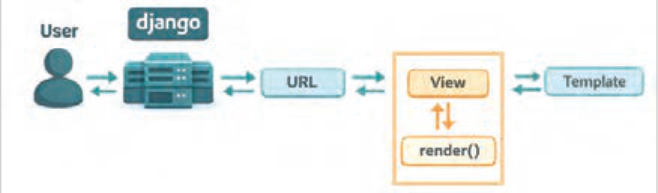
شکل 17 مسیر طی شده یک request در جنگو
صفحه ۲۸۸
همانطورکه در شکل 17 اشاره شده است، تابع render در view میتواند اطلاعات را به فایل html ارسال کند تا به کمک قابلیتهای جنگو، اطلاعات ارسالی به فایلِ html با آن ترکیب شده و به کاربر نمایش داده شود.
در ادامه، در دو مرحله میتوانید یک عدد تصادفی را بهعنوان دمای هوای شهر همدان، با کمک تابع render به یک فایل html ارسال کرده و به کاربر نمایش دهید.
مرحله اول: فایل views.py را باز کنید و show_temp_view را همانند شکل 18 تغییر دهید.
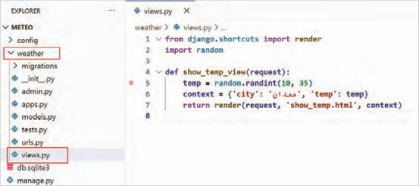
شکل 18 استفاده از تابع render
توضیحات کدها:
خط 1: تابع render از ماژول shortcuts وارد (import) شده است.
خط 2: ماژول random وارد (import) شده است.
خط 5: یک عدد تصادفی بهعنوان دمای هوا برای شهر همدان انتخاب میشود، این اطلاعات در صفحه اصلی سایت نمایش داده خواهد شد.
خط 6: یک دیکشنری شامل نام شهر (city) و دمای شهر (temp) ایجاد شده و در متغیری با نام context ذخیره شده است.
خط 7: از تابع render استفاده شده است. برای این تابع سه آرگومان ارسال شده است. آرگومان اول request است که از ورودی view دریافت شده است. آرگومان دوم نام فایل html موجود در پوشه templates و آرگومان سوم یک دیکشنری است که برای html ارسال شده است.
مرحله دوم: یکپوشه با نام templates در weather app بسازید و یک فایل html با نام show_temp.html درون آن ایجاد کنید.
فایل show_temp.html و هر فایل html دیگری که در این پوشه قرار بگیرد، بهاصطلاح یک template است.
صفحه ۲۸۹
فایل show_temp.html و محتوای آن را همانند شکل 19 ایجاد کنید.
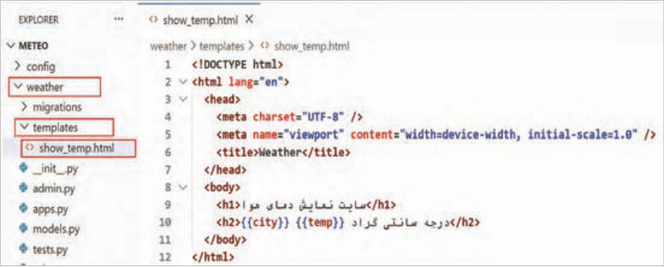
شکل 19 محتویات show_temp.html
توضیحات کدها:
خط 10: از {{city}} و {{temp}} جهتنمایش نام شهر و دمای شهر استفاده شده است. علامت {{}} جهتنمایش متغیرها در template بهکار میرود.
این متغیرها، کلیدهای دیکشنری context هستند که تابع render آن را برای show_temp.html ارسال کرده است.
همانطورکه مشخص است، میتوانید در template از این متغیرها، درون تگهای html استفاده کنید.
فایلها را ذخیره کنید. سپس وارد terminal شده و با کلیدهای ترکیبی ctrl + c وب سرور جنگو را متوقف کنید و دوباره با دستور runserver آن را راهاندازی کنید.
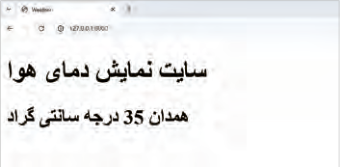
اکنون صفحه اصلی سایت را refresh کنید. تغییرات جدید را مشاهده خواهید کرد (شکل 20).
شکل 20 مشاهده تغییرات جدید
روند طی شده نمایش دمای هوا، از لحظه ورود درخواست کاربر به سرور جنگو تا نمایش اطلاعات با template، در شکل 21 شبیهسازی شده است.
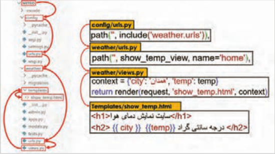
شکل 21 روند نمایش دمای هوا
صفحه ۲۹۰
فعالیت
با استفاده از تابع render و ایجاد یک template مناسب برای view، دمای هوای شهر خودتان را با اعداد تصادفی نمایش دهید.
نمایش دمای هوای واقعی
جهتنمایش دمای هوای لحظهای شهرها میتوانید از سایتهایی مثل https://open-meteo.com استفاده کنید. این سایت ابزاری در اختیار برنامهنویس قرار میدهد تا بتواند دمای هوای شهرهای مختلف را نمایش دهد.
سایت open-meteo یک API رایگان دارد که با دریافت طول و عرض جغرافیایی، اطلاعات آبوهوای منطقه موردنظر را در قالب JSON ارائه میدهد.
بهعنوانمثال، اگر آدرس زیر را برای دریافت وضعیت آبوهوای شهر همدان در مرورگر باز کنید، نتیجه با قالب JSON نمایش داده خواهد شد (شکل 22).
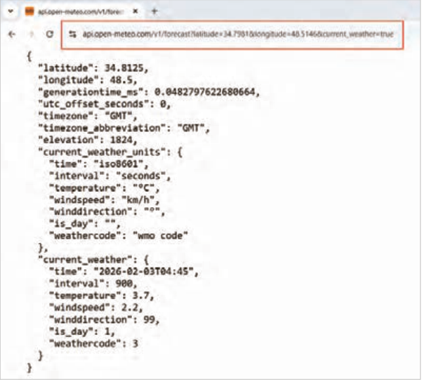
شکل 22 دریافت دمای شهر همدان از API آنلاین
-meteo.com/v1/forecast?latitude=34.7981&longitude=48.5146¤thttps://api.open
weather=true
API مانند یک پل بین دو برنامه است. یعنی زمانی که یک برنامه (مثًلا پروژه جنگو) به اینترنت وصل میشود، از طریق API میتواند از یک سایت دیگر داده بگیرد.
در این پروژه، با استفاده از API سرویس open-meteo اطلاعات آب و هوایی دریافت میشود. open-meteo این اطلاعات را بهصورت دادههای منظم در قالب (Json) برمیگرداند، سپس پروژه جنگو آنها را نمایش میدهد.
صفحه ۲۹۱
ارسال مقدار latitude و longitude برای دریافت اطلاعات آبوهوا اجباری است.
اکنون جهتنمایش دمای فعلی شهر همدان تابع show_temp_view را از داخل فایل views.py همانند شکل 23 تغییر دهید.
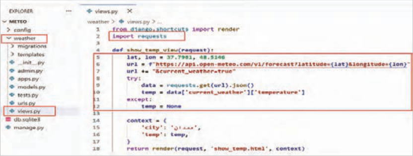
شکل 23 تغییر در view جهت دریافت اطلاعات از API
توضیحات کدها:
خط 2: کتابخانه requests وارد (import) شده است. این کتابخانه باید از قبل نصب شده باشد. با دستور
خط 5: مقادیر latitude و longitude همان طول و عرض جغرافیایی هستند که برای شهر همدان مشخص شده و در متغیرهای lat و lon ذخیره شدهاند.
خط 6 و 7: متن درخواست بهصورت get و با استفاده از lat و lon آماده شده است.
خط 8: با استفاده از try خطای احتمالی مدیریت شده است، بهعنوانمثال اگر اینترنت وصل نباشد، except در خط 11 مقدار temp را برابر None خواهد کرد و سایت با مشکل مواجه نمیشود.
خط 9: درخواست به سرور open-meteo.com ارسال شده و نتیجه با قالب json در دیکشنری data ذخیره شده است.
خط 10: مقدار temperature از دیکشنری data استخراج شده و در متغیر temp ذخیره شده است.
در فایل show_temp.html تغییراتی برای مدیریت خطا همانند شکل 24 اعمال کنید.
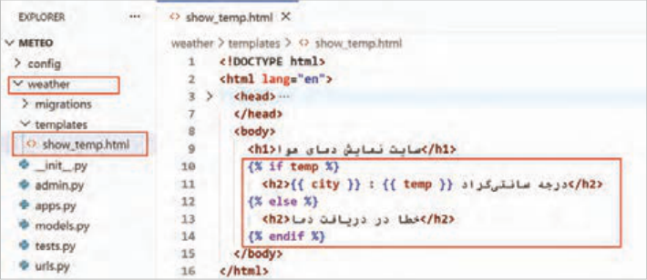
شکل 24 تغییرات در template جهت مدیریت خطای احتمالی
صفحه ۲۹۲
توضیحات کدها:
خط 10: در template از دستور شرطی if استفاده شده است. درصورتیکه temp مقدار داشته باشد و None نباشد، دمای شهر نمایش داده میشود.
خط 13: در صورت بروز خطا، پیغامی مناسب به کاربر نمایش داده میشود.
اکنون فایلها را ذخیره کرده و پس از اطمینان از اتصال به اینترنت، صفحه اصلی سایت را refresh کنید. خروجی صفحه اصلی سایت، همانند شکل 25 خواهد بود (واضح است که دمای هوا برای شما ممکن است متفاوت نمایش داده شود و البته سرعت باز شدن صفحه اصلی سایت، بهسرعت اینترنت شما ارتباط دارد، چون در کدها به open-meteo.com متصل شدهاید.)
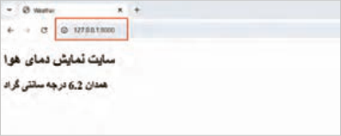
شکل 25 نمایش دمای همدان بهصورت آنلاین
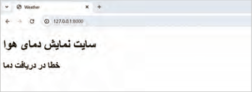
درصورتیکه ارتباط با سایت برقرار نشود، خروجی همانند شکل 26 خواهد بود.
شکل 26 نمایش خطای مناسب به کاربر
فعالیت
با استفاده از سایت open-meteo.com دمای هوای شهر خود را در صفحه اول سایت نمایش دهید.
Page 287
Code notes:
Line 1: the path function has been imported.
Line 2: the show_temp_view function has been imported from views.py.
Line 5: a path has been added. This path means that if the user opens the site’s home page, show_temp_view from inside the views.py file is run. The name parameter has been added to this path.
In Django, every address (URL) can have a name so that it can be referred to more easily anywhere else.
This name has no effect on the URL address itself and is used only for referring to it.
The name parameter in Django paths is like an alias for that address, which is also called a URL name.
Save the file and start the Django server with runserver.
Open the site’s home page in the browser.
Congratulations, you have successfully created your first Django view (Figure 16).
Figure 16 output of the first Django view
Activity
By completing the view and the urls.py file, display Tehran’s temperature information.
Getting to know the render function in Django: to display a view better, html files are used. Each app in Django can have its own html files separately. To do this, create a folder named templates in the app and store the html files in it. These html files are called a template in Django.
Look at Figure 17; the path a request (web request) takes in Django can be seen.
According to the image, the request sent by the user is first transferred to the Django server, then using the url it is sent to the appropriate view. Each view, with the help of an html file or the same template, prepares the displayable information and sends it to the user.
Figure 17 the path a request takes in Django
Page 288
As noted in Figure 17, the render function in the view can send information to the html file so that, with Django’s features, the information sent to the html file is combined with it and shown to the user.
Next, in two steps you can send a random number as the air temperature of the city of Hamedan, with the help of the render function, to an html file and show it to the user.
Step one: open the views.py file and change show_temp_view as shown in Figure 18.
Figure 18 using the render function
Code notes:
Line 1: the render function has been imported from the shortcuts module.
Line 2: the random module has been imported.
Line 5: a random number is chosen as the air temperature for the city of Hamedan; this information will be displayed on the site’s home page.
Line 6: a dictionary including the city name (city) and the city temperature (temp) has been created and stored in a variable named context.
Line 7: the render function has been used. Three arguments have been sent to this function. The first argument is request, which was received from the view input. The second argument is the name of the html file in the templates folder, and the third argument is a dictionary that has been sent for the html.
Step two: create a folder named templates in the weather app and create an html file named show_temp.html inside it.
The show_temp.html file and any other html file that is placed in this folder is, in other words, a template.
Page 289
Create the show_temp.html file and its content as shown in Figure 19.
شکل 19 محتویات show_temp.html
Code notes:
Line 10: {{city}} and {{temp}} have been used to display the city name and the city temperature. The {{}} marks are used to display variables in the template.
These variables are the keys of the context dictionary that the render function sent for show_temp.html.
As is clear, you can use these variables inside html tags in the template.
Save the files. Then go into the terminal and with the key combination ctrl + c stop the Django web server and start it again with the runserver command.
Now refresh the site’s home page. You will see the new changes (Figure 20).
Figure 20 viewing the new changes
The process of displaying the air temperature, from the moment the user’s request enters the Django server until the information is displayed with the template, is simulated in Figure 21.
Figure 21 the process of displaying the air temperature
Page 290
Activity
Using the render function and creating a suitable template for the view, display the air temperature of your own city with random numbers.
Displaying the real air temperature
To display the live air temperature of cities, you can use sites such as https://open-meteo.com. This site provides a tool for the programmer so they can display the air temperature of different cities.
The open-meteo site has a free API that, by receiving latitude and longitude, provides the weather information for the desired region in JSON format.
For example, if you open the following address in the browser to receive the weather status of the city of Hamedan, the result will be displayed in JSON format (Figure 22).
Figure 22 receiving Hamedan’s temperature from an online API
-meteo.com/v1/forecast?latitude=34.7981&longitude=48.5146¤thttps://api.open
weather=true
An API is like a bridge between two programs. That is, when a program (for example a Django project) connects to the internet, through an API it can get data from another site.
In this project, weather information is received using the open-meteo service API. open-meteo returns this information as organized data in (Json) format, then the Django project displays it.
Page 291
Sending the latitude and longitude values to receive weather information is required.
Now, to display the current temperature of the city of Hamedan, change the show_temp_view function inside the views.py file as shown in Figure 23.
Figure 23 changing the view to receive information from the API
Code notes:
Line 2: the requests library has been imported. This library must already be installed. With the command
Line 5: the latitude and longitude values are the same geographic latitude and longitude that have been specified for the city of Hamedan and stored in the variables lat and lon.
Lines 6 and 7: the request text has been prepared as get and using lat and lon.
Line 8: with try, possible errors have been handled; for example, if the internet is not connected, except on line 11 will set the value of temp to None and the site will not face a problem.
Line 9: the request has been sent to the open-meteo.com server and the result in json format has been stored in the data dictionary.
Line 10: the temperature value has been extracted from the data dictionary and stored in the temp variable.
In the show_temp.html file, apply changes for error handling as shown in Figure 24.
Figure 24 changes in the template for handling possible errors
Page 292
Code notes:
Line 10: in the template, the conditional if statement has been used. If temp has a value and is not None, the city temperature is displayed.
Line 13: if an error occurs, an appropriate message is shown to the user.
Now save the files and after making sure you are connected to the internet, refresh the site’s home page. The output of the site’s home page will be like Figure 25. (Obviously the air temperature may be displayed differently for you, and of course the speed at which the home page opens relates to your internet speed, because in the code you have connected to open-meteo.com.)
Figure 25 displaying Hamedan’s temperature online
If the connection with the site is not established, the output will be like Figure 26.
Figure 26 displaying an appropriate error to the user
Activity
Using the open-meteo.com site, display the air temperature of your city on the first page of the site.